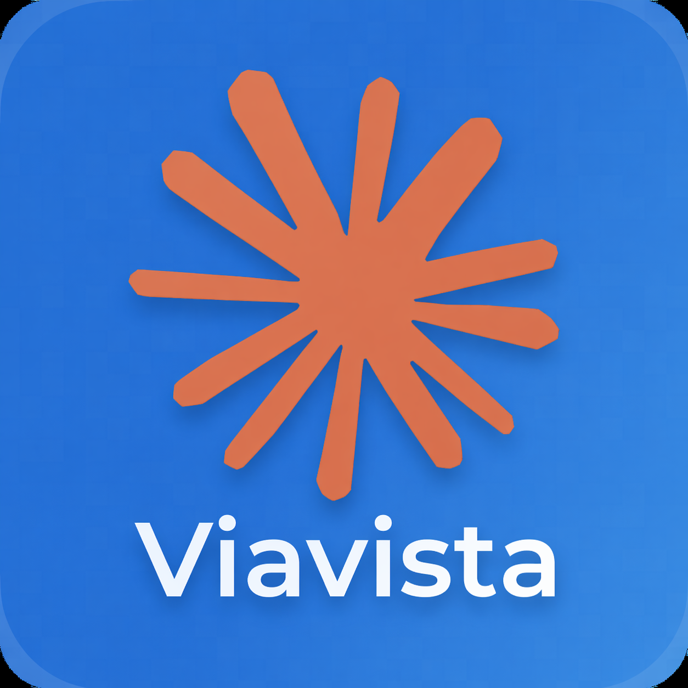
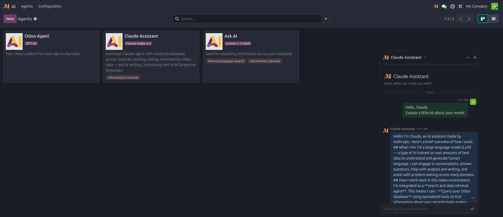
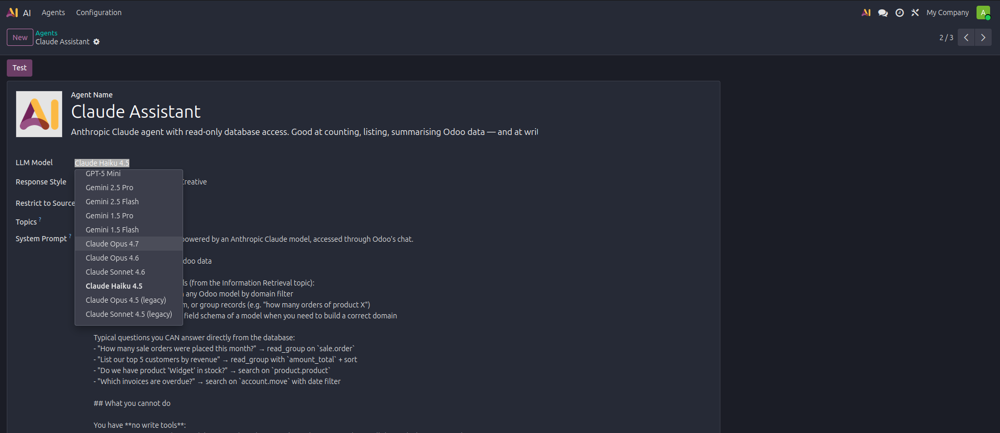

Adds Anthropic Claude as a third LLM provider alongside OpenAI and Google Gemini. Once the module is installed and an API key is entered, Claude models appear in every place Odoo exposes a model selection — no code, no custom server actions. Claude shines at long-form content, code, and regional languages, and ships with prompt caching for roughly 90 % discount on repeated system prompts.


Claude Opus 4.7, Sonnet 4.6, and Haiku 4.5 (plus legacy 4.5 entries) become available wherever Odoo asks you to pick an LLM — AI Agents, AI Fields, AI Server Actions, AI Composer, Livechat bots, Knowledge, Documents, CRM.
Every system prompt is tagged for Anthropic's ephemeral cache. Agents that reuse the same instructions pay roughly 10 % of the input token cost on the cached portion — a big saving for chat, Ask AI, and repeatable workflows.
Odoo's tool / function-calling loop works transparently with Claude. The module translates OpenAI-style schemas into Anthropic input_schema and converts tool-call responses back, so every existing ir.actions.server tool keeps working.
Odoo's structured-output mode (used by AI Fields and some composer flows) is wired through a forced-tool-call, giving you clean JSON responses from Claude even though it has no native JSON schema mode.
Text, image, and PDF attachments are forwarded as base64 content blocks. Send a scanned invoice or product photo to a Claude agent and it can read it.
A pre-configured agent called Claude Assistant is installed with the module: read-only database access, Haiku 4.5 default (cheapest tier), tailored system prompt for BCS/regional languages. Mention it in any Discuss channel to start chatting.
Enter your Anthropic API key in Settings → General Settings → AI and you are done. Falls back to the ODOO_AI_ANTHROPIC_TOKEN environment variable for container deployments.
The module registers Claude through Odoo's own provider abstraction — OpenAI and Google agents keep working exactly as before. No forks, no replaced code, no persistent schema changes.
Need a key? Sign up at console.anthropic.com and generate one under Settings → API Keys.
Odoo version: 19.0 Enterprise
License: LGPL-3
Dependencies: ai, ai_app
External dependencies: python-requests
Author: Viavista d.o.o.
Visit www.viavista.ba or contact us at info@viavista.ba.